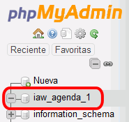
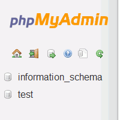

En esta lección se proponen ejercicios para practicar el uso de phpMyAdmin instalando pequeñas aplicaciones. Se pueden consultar las soluciones de estos ejercicios de phpMyAdmin, aunque se recomienda intentar realizarlos primero sin recurrir a estas soluciones.
Administración de bases de datos on phpMyAdmin
Las aplicaciones web que se abordan en este curso utilizan la base de datos MySQL. Por motivos de seguridad, en servidores reales no se recomienda que las aplicaciones se conecten a MySQL como usuario root. Para cada aplicación, es más recomendable crear un usuario en MySQL que administre la aplicación. Ese procedimiento es el que se utilizará en estos apuntes. Para crear esos usuarios y, en general, administrar MySQL, se utilizará la aplicación phpMyAdmin.
En esta lección se proponen ejercicios en los que se instalará varias veces una pequeña aplicación de agenda. En los ejercicios se plantean tres situaciones distintas:
instalar y configurar manualmente la aplicación como usuario que sólo puede crear una base de datos
instalar y configurar manualmente dos aplicaciones como usuario que puede crear varias bases de datos
instalar y configurar manualmente dos aplicaciones como usuario que sólo puede crear una base de datos (es necesario además modificar la aplicación)
phpMyAdmin (2) 1 - Crear un usuario iaw_agenda_1 con una base de datos única
Cree un nuevo usuario de MySQL con la siguiente configuración
nombre de usuario: iaw_agenda_1
servidor: localhost
contraseña: iaw_agenda_1
base de datos para el usuario: base de datos con el mismo nombre (iaw_agenda_1)
sin privilegios globales
sin límite de recursos
Una vez creado el usuario, entre en phpMyAdmin como usuario iaw_agenda_1 y compruebe que se ha creado la base de datos iaw_agenda_1.

Como usuario iaw_agenda_1, compruebe que no puede borrar la base de datos, ni crear otra base de datos (por ejemplo, la base de datos iaw_agenda_1_db1).
phpMyAdmin (2) 2 - Instalar una aplicación como usuario iaw_agenda_1
Descomprima la aplicación en la carpeta adecuada y renombre la carpeta como agenda_1.
Modifique el archivo de configuración config.php de la aplicación Agenda para que esta utilice la cuenta del usuario iaw_agenda_1 en MySQL.
Ejecute la aplicación en el navegador, eligiendo primero la opción "Borrar todo" para crear la tabla en la base de datos, y compruebe que funciona creando varios registros.
Compruebe el contenido de la tabla en phpMyAdmin como usuario iaw_agenda_1.
phpMyAdmin (2) 3 - Crear un usuario iaw_agenda_2 que pueda administrar varias bases de datos
Cree un nuevo usuario de MySQL con la siguiente configuración
nombre de usuario: iaw_agenda_2
servidor: localhost
contraseña: iaw_agenda_2
base de datos para el usuario: Otorgar todos los privilegios al nombre que contiene comodín (username\_%)
sin privilegios globales
sin límite de recursos
Una vez creado el usuario, entre en phpMyAdmin como usuario iaw_agenda_2 y compruebe que no se ha creado ninguna base de datos.

Compruebe que el usuario iaw_agenda_2 no puede crear una base de datos cuyo nombre no empiece por iaw_agenda_2_, por ejemplo una base de datos que se llame agenda_2.
phpMyAdmin (2) 4 - Instalar dos aplicaciones como usuario iaw_agenda_2
Descomprima la aplicación dos veces en dos carpetas y renombre las carpetas como agenda_2a y agenda_2b.
Modifique los archivos de configuración config.php de ambas aplicaciones para que estas utilicen la cuenta del usuario iaw_agenda_2 en MySQL (pero bases de datos distintas).
Nota: Hay que tener en cuenta que el nombre de las bases de datos debe comenzar por el nombre del usuario y un guión bajo (en este caso, iaw_agenda_2_agenda_2a y iaw_agenda_2_agenda_2b, por ejemplo)
Para distingir después una aplicación de otra fácilmente, puede cambiar el color básico de la aplicación en el archivo de configuración.
Ejecute las aplicaciones en el navegador, eligiendo primero la opción "Borrar todo" para crear la tabla en la base de datos, y compruebe que funcionan creando varios registros.
Compruebe los contenidos de las tablas en phpMyAdmin como usuario iaw_agenda_2.
phpMyAdmin (2) 5 - Crear un usuario iaw_agenda_3 con una base de datos única
Cree un nuevo usuario de MySQL con la siguiente configuración
nombre de usuario: iaw_agenda_3
servidor: localhost
contraseña: iaw_agenda_3
base de datos con el mismo nombre (iaw_agenda_3)
sin privilegios globales
sin límite de recursos
Una vez creado el usuario, entre en phpMyAdmin como usuario iaw_agenda_3 y compruebe que se ha creado la base de datos iaw_agenda_3.
phpMyAdmin (2) 6 - Instalar dos aplicaciones como usuario iaw_agenda_3
Descomprima la aplicación en dos carpetas y renombre las carpetas como agenda_3a y agenda_3b.
Modifique los archivos de configuración config.php para que las aplicaciones utilicen la cuenta del usuario iaw_agenda_3 en MySQL y la misma base de datos iaw_agenda_3, pero cada una guarde sus registros en tablas distintas.
Ejecute las aplicaciones en el navegador y compruebe que funcionan creando varios registros.
Compruebe los contenidos de las tablas en phpMyAdmin como usuario iaw_agenda_3.
phpMyAdmin (2) 7 - Mejora de las aplicaciones del usuario iaw_agenda_3
El problema de las aplicaciones del ejercicio 6 es que si se elige la opción "Borrar todo" en una de las aplicaciones se pierde toda la información de la otra, ya que al "Borrar todo" se borra la base de datos completa.
Modifique la función borraTodo() del fichero biblioteca_mysql.php para que no se produzca este problema. Se puede hacer de dos maneras:
Añadiendo otra opción al programa Agenda que borre las tablas.
Haciendo que la opción Borrar todo sólo borre la tabla que usa la aplicación (para usar la aplicación por primera vez sería necesario crear la base de datos en phpMyAdmin).
Nota: Para modificar la función borraTodo() del fichero biblioteca_mysql.php puede utilizar la función borraTodo() del fichero biblioteca_sqlite.php.
Ejecute las aplicaciones en el navegador y compruebe que funcionan creando varios registros. Compruebe especialmente que al borrar todo desde una aplicación no se borran los registros de la otra.
Compruebe los contenidos de las tablas en phpMyAdmin como usuario iaw_agenda_3.